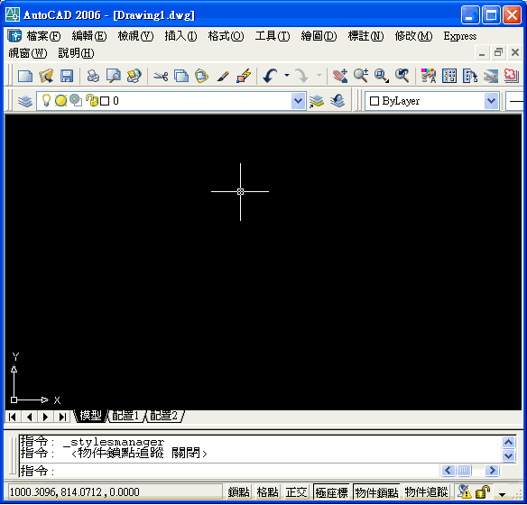
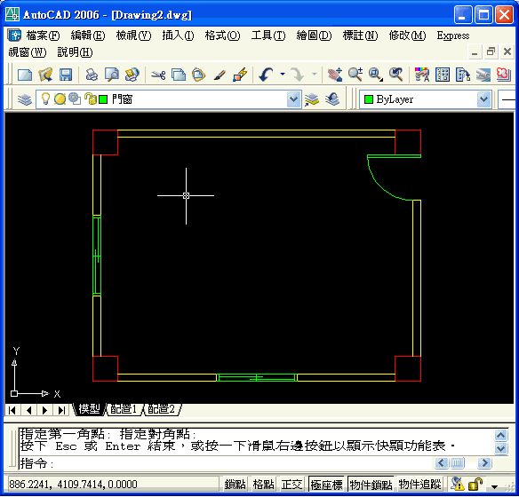
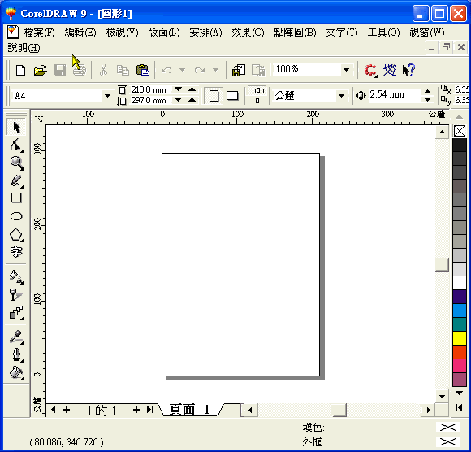

我試過用CorelDRAW的方法
但是失敗了
就是我出圖後 筆寬都一樣粗
請問各位大大是以上方法錯了
還是有其他問題 ?
或者誰能提供我一套較"詳細"的方法 (麻煩了)
將CAD轉檔出去 然後筆的粗細不會跑掉
接著可以讓我用電腦上色 謝謝
依據個人經驗使用 出圖成EPS格式 (可以保持比例及筆寬)，再到 Photoshop製作 是最佳選擇!!
因為以前在事務所時競圖的時候，一定要使用這種方式，AutoCAD的線稿才不會因轉換而模糊失真~
你所提供的教學網頁其實講解的非常詳細，可以是早期R14版本的教學，以下提供你試用版本為2000以上的教學供你參考，有問題請隨時提出來討論喔~
此方式一樣要透過出圖的方式才能控制筆寬，但需建立虛擬印表機，再出成EPS格式即可在 CorelDRAW 或其他美工軟體(Photoshop)上色，而透過AutoCAD的顏色相關出圖形式表(CTB)，使用顏色來定義出圖後筆寬。
一、新增繪圖機(虛擬印表機) PC3：
二、新增顏色相關出圖形式表 CTB：

三、出圖：
1.請選擇新建的繪圖機(PostScript Level 1.pc3)及出圖形式表(TEST.ctb)。
2.新增地出圖形式表內定為全彩，請使用編輯改為黑色。
PS:圖層的線寬請使用預設，而筆寬是按照你的圖面顏色來控制的，也可以在新增圖層顏色在使用CTB來修改喔。
柱子:紅色-筆寬=0.5
牆壁:黃色-筆寬=0.35
門窗:綠色-筆寬=0.18

四、在CorelDRAW開啟舊檔，選擇剛剛出圖的Drawing2-Model.EPS

延伸閱讀文章：「教學」匯出eps檔案